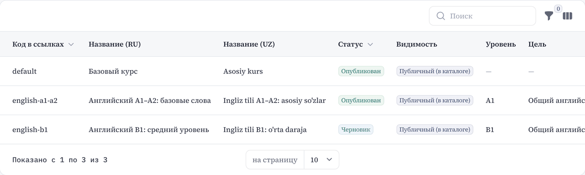
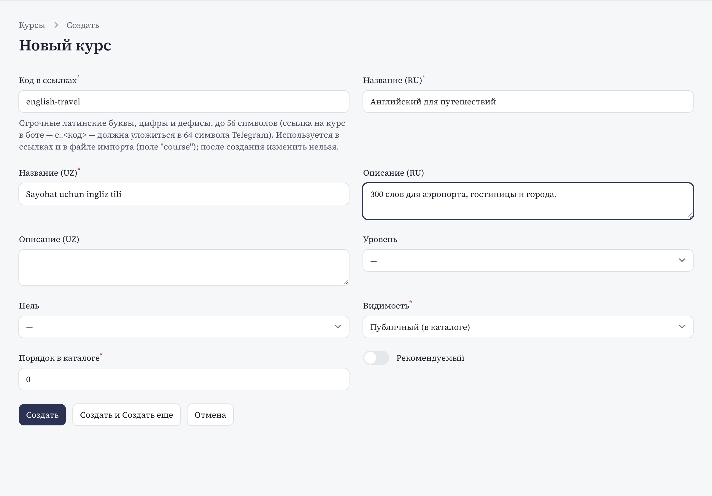
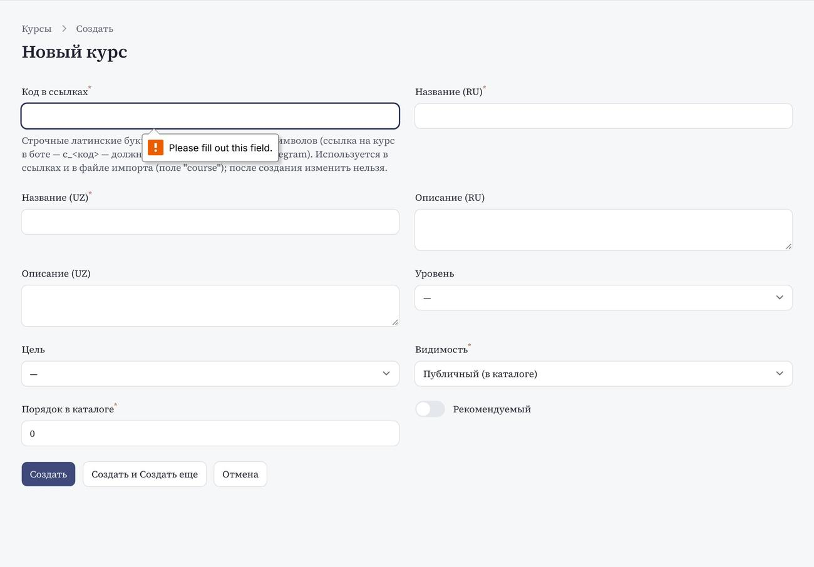
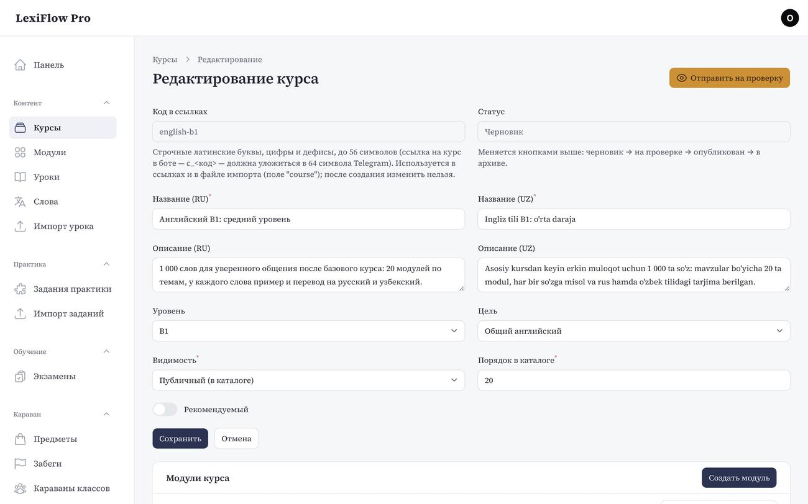
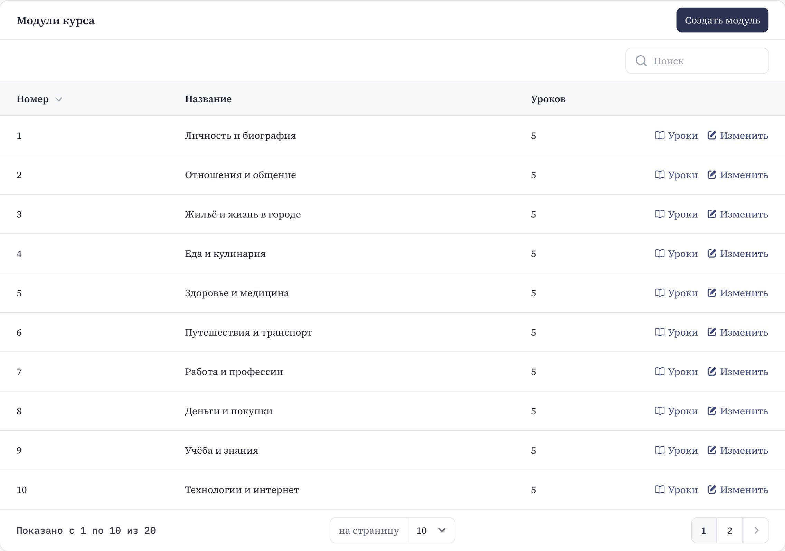
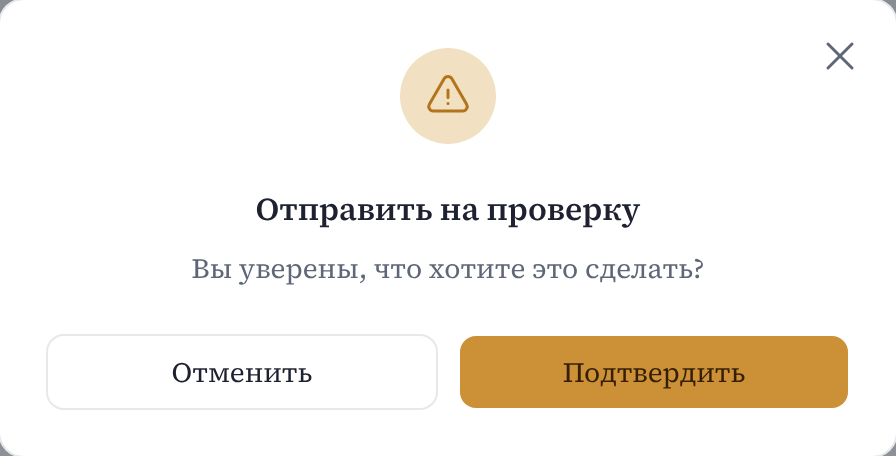
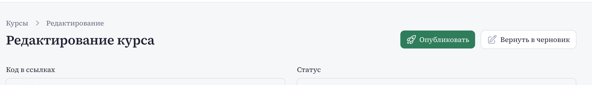
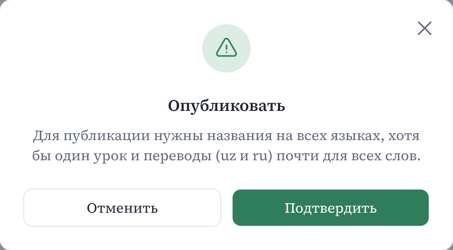
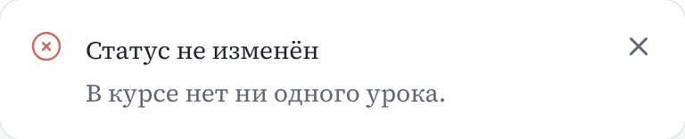

Курс — это набор слов, по которому учится ученик или класс: например, «Английский A1–A2: базовые слова» на 1 000 слов. Раздел Контент → Курсы — только для администратора.

Поиск — по коду и названию, фильтр — по статусу. Кнопки смены статуса есть прямо в строке курса (например, Отправить на проверку у черновика или Архивировать у опубликованного), и на странице курса.

| Поле | Что вводить |
|---|---|
| Код в ссылках | строчные латинские буквы, цифры и дефисы, например english-travel. Код используется в ссылке на курс в боте и в файлах импорта (поле "course"). После создания изменить нельзя |
| Название (RU), Название (UZ) | обязательны оба: ученик видит название на языке своего интерфейса |
| Описание (RU), Описание (UZ) | необязательно; показывается в каталоге курсов |
| Уровень | A1–C2 |
| Цель | Общий английский, Школа, IELTS, SAT |
| Видимость | «Публичный (в каталоге)» — виден всем в каталоге; «По ссылке или из группы» — только по ссылке или в группе, где выбран этот курс; «Приватный» |
| Порядок в каталоге | число: меньшее стоит выше |
| Рекомендуемый | отмечает курс в каталоге как рекомендуемый |
| Статус | в форму не вводится, меняется кнопками |
Если не заполнить обязательные поля, форма не сохранится, а под полями появятся красные подсказки.


Таблица Модули курса внизу страницы показывает номер, название и число уроков модуля. Создать модуль добавляет модуль в этот курс, Уроки открывает уроки модуля, Изменить — форму модуля.

Статус меняется только кнопками вверху страницы курса или в строке списка. Каждое нажатие спрашивает подтверждение и записывается в журнал аудита.
| Сейчас | Кнопка | Станет | Что увидят ученики |
|---|---|---|---|
| Черновик | Отправить на проверку | На проверке | ничего |
| На проверке | Опубликовать / Вернуть в черновик | Опубликован / Черновик | после публикации курс появляется в каталоге (если он публичный) и в списке курсов для групп |
| Опубликован | Архивировать | В архиве | курс уходит из каталога и из выбора курса группы |
| В архиве | Вернуть в черновик | Черновик | — |


Окно публикации напоминает: «Для публикации нужны названия на всех языках, хотя бы один урок и переводы (uz и ru) почти для всех слов». Курс опубликуется, только если:
Если условие не выполнено, статус не меняется, а справа вверху появляется красное сообщение «Статус не изменён» с причиной, например «В курсе нет ни одного урока.» или «Переводы (RU, UZ) есть только для 18 из 20 слов (90%), а нужно не меньше 95%.».


Озвучку публикация не проверяет. Покрытие озвучки проверяйте до публикации: опубликованный курс с покрытием ниже 95 % попадёт в «Требуют внимания».
Курс с кодом default («Базовый курс») обслуживает все группы, у которых не выбран свой курс. Кнопки Архивировать у него нет: архивировать его нельзя.
Курсы не удаляются — кнопки удаления нет. Ненужный курс архивируйте. Архивировать курс, по которому учатся группы, стоит только после того, как вы поменяли им курс в разделе Telegram-группы.
У платформы есть пять готовых пакетов по 1 000 слов: english-a1-a2, english-b1, english-b2, english-c1, english-c2. Их загружает технический администратор командой (приложение «Для технического администратора»); курс появляется черновиком, дальше — проверка и публикация обычным порядком.